ABOUT ME / メッセージ
Matthias Laurence A. Villarino
UAHAFHH USCUSCUSC
子供の頃、絵を描くことやピクセルアート、ゲーム開発を趣味で制作していました。そのうち、デザインする事と コンセプトワークを考える事が楽しいと思う事ができました。学問を志すことで、タイポグラフィーやロゴマークなどの 日本のグラフィックデザインの複雑さと考え方を理解したいと言う思いから、あらゆる考え方デザインを研究することで、 少しずつ経験を積んでいき、このポートフォリオを作成しました。これからも日々向上していきたいと思います。
SOFTWARE / ソフト
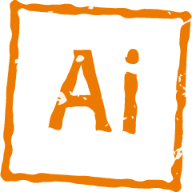
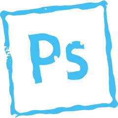
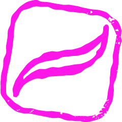
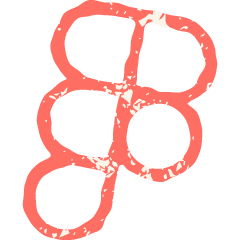
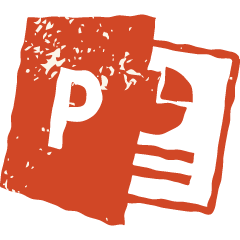
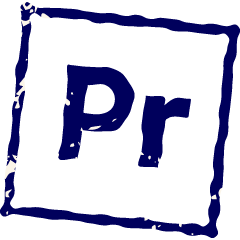
SKILLS / スキル
動画編集ソフト、写真編集ソフト、文章を書くこと、デッサン、スケッチ、絵を描くこと、クリティカルシンキング
LANGUAGES / 言語
英語、日本語 N2、タガログ語、セブアノ語
HOBBIES / 趣味
創作活動、動画制作、音楽を聴くこと、絵を描くこと、キャラクターデザイン
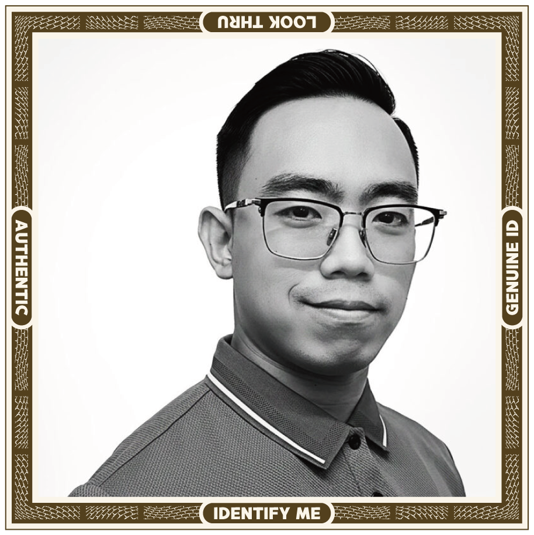
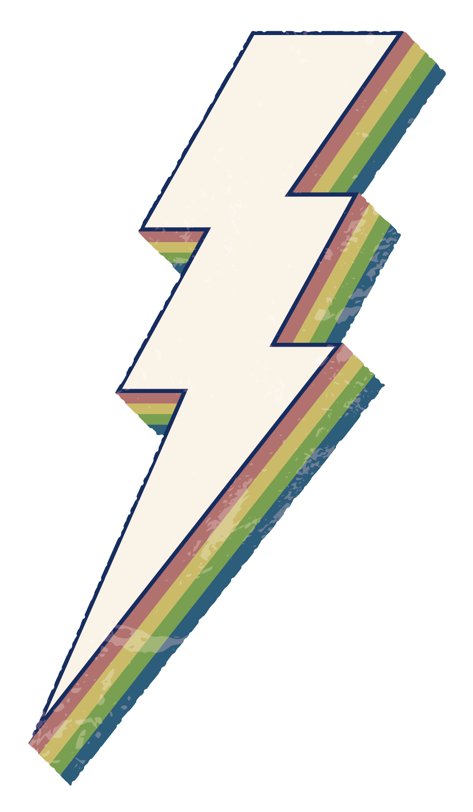
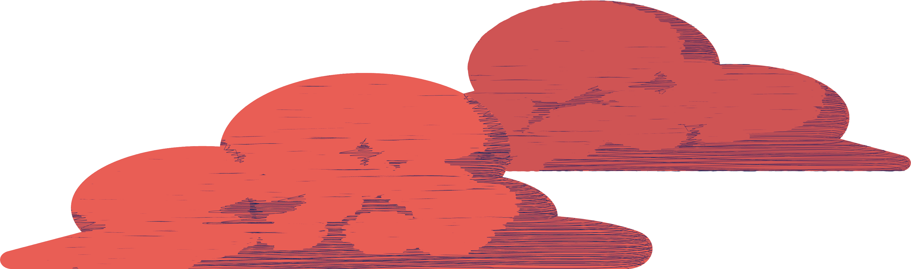
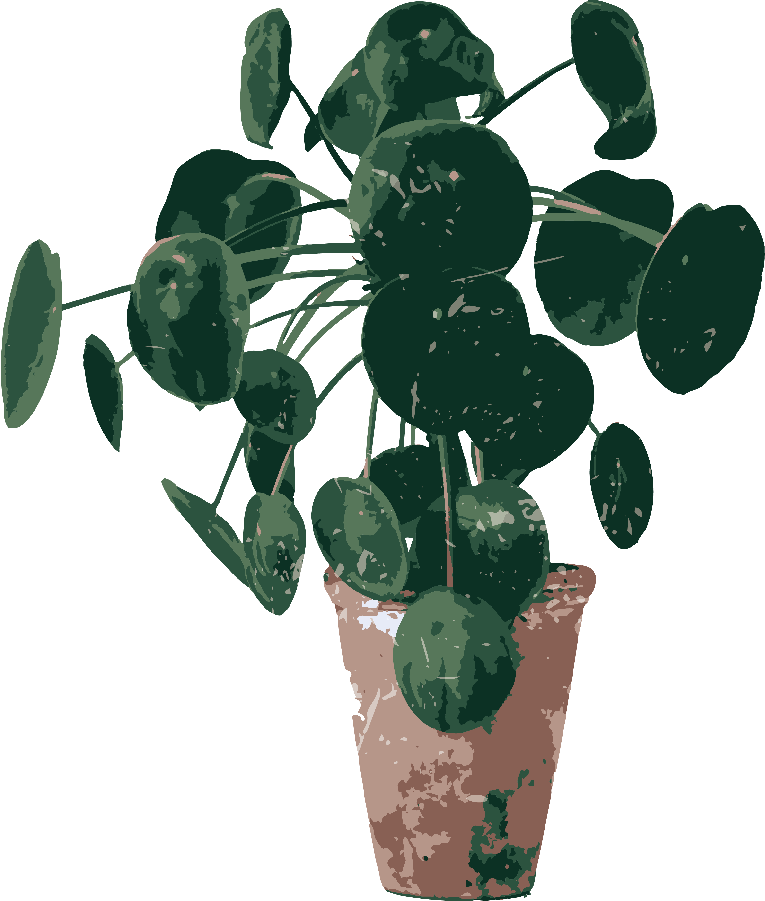
PORTFOLIO / ポートフォリオ
-
 ジジ・ムリン：
ジジ・ムリン：
Septemberスライドショー・ミーム動画 -
 『Idle Dreams, Idol Dreams』
『Idle Dreams, Idol Dreams』
応募作品 -
 チルノの日2025：
チルノの日2025：
チルク・チャリス -
 ロゼミ・ラブロック：
ロゼミ・ラブロック：
卒業ファンアート -
 鬼人正邪 東方ファンアート
鬼人正邪 東方ファンアート -
 ジジとクロニー：
ジジとクロニー：
Boat Goes Binted! -
 ワトソン・アメリア：キービジュアル風イラスト
ワトソン・アメリア：キービジュアル風イラスト -
 Rosemi Lovelock:
Rosemi Lovelock:
Fellow Teens -
 春秋会１００周年
春秋会１００周年
ロゴマーク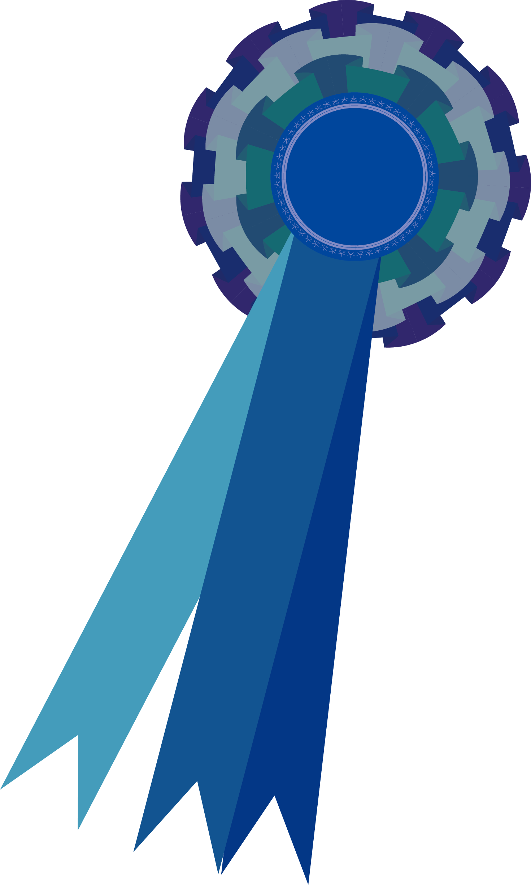
-
 プリントパック
プリントパック
年賀状2024辰年 -
 WeChooseLocal店舗ページ
WeChooseLocal店舗ページ
ヒーローバナーシリーズ -
 PUGOのカバー画像
PUGOのカバー画像 -
 PebblePathの段差付き
PebblePathの段差付き
フォルダーインサート -
 Stonebridge Dental と PebblePathの
Stonebridge Dental と PebblePathの
夏季キャンペーン用フライヤ -
 AtriumXの名刺
AtriumXの名刺 -
 AtriumXの会場マップ
AtriumXの会場マップ -
 405 Dental Aesthetics のアメニティ
405 Dental Aesthetics のアメニティ
紹介用ラックカード -
 Root Dental プレゼン資料
Root Dental プレゼン資料 -
 Katy Smile Designのクーポン
Katy Smile Designのクーポン -
 ロゼミ・ラブロック：Fellow Kids
ロゼミ・ラブロック：Fellow Kids
ジジ・ムリン：Septemberスライドショー・ミーム動画
ジジ・ムリンの9月21日のカラオケ配信をもとにしたファンアート動画です。フィリップ・ベイリー風の衣装をアイドルらしくアレンジし、車内で歌う背景も配信の雰囲気に合わせました。
『Idle Dreams, Idol Dreams』応募作品
Otakufest 2026のキャラクターデザインコンテスト用に描いたオリジナルキャラ、『シーフ・ヘザートップ』です。農場を出てアイドルを目指す、未完成なかかしの少女として、ほつれた木の手足でその設定を見せています。
チルノの日2025：チルク・チャリス
9月9日のチルノの日に描いた、ミームネタ入りの作品です。チルノが「チルク」を持って乾杯する構図で、YandereDevのチャリスネタ、チルノの名前、Neco-Arcの「pilk」ネタを合わせました。
ロゼミ・ラブロック：卒業ファンアート
ロゼミ・ラブロックの卒業に合わせて描いたファンアートです。涙をこらえながらバラの花束を持つ静かな別れの場面にし、告知配信のひまわり畑とRosebudのぬいぐるみも入れました。
鬼人正邪 東方ファンアート
鬼人正邪の「逆さま」の能力をテーマにした練習作品です。逆さのポーズ、髪、スカート、脱げかけたスリッパで動きを出し、原色、矢印、黄色い背景でカービィ3のHyper Zoneらしい勢いも少し入れました。
ジジとクロニー：Boat Goes Binted!
ジジ・ムリンの「Boat goes binted!」を、クロニーに支えられるタイタニック風の構図にしたミームファンアートです。夕焼けのロマンチックな雰囲気から、下の沈む船へつなげてオチを見せています。
ワトソン・アメリア：キービジュアル風イラスト
ワトソン・アメリアの卒業に合わせて描いた、記念用のキービジュアル風イラストです。ローマ数字の時計の上で動きのある全身ポーズにし、マスコットたちと淡い金色、くすんだ青緑で明るく少し懐かしい雰囲気にしました。
ロゼミ・ラブロック：Fellow Kids
ロゼミが配信で若者言葉に戸惑っていた話から、「How do you do, fellow kids?」のポーズで描いたミームファンアートです。衣装、背景のRosebud、スケボーのステッカー、字幕風の文字もロゼミのネタに合わせました。
春秋会１００周年ロゴマーク
弁理士春秋会の100周年記念のロゴマークです。この葉と花の花輪(リース)は上から下に春秋会の２つの季節(秋の試験合格祝賀、春の役員選挙)を示し、円形でサイクルと周年記念の意味を表すものです。
プリントパック年賀状2024辰年
プリントパックが運営する2024年の木竜の年賀状コンテストへの応募作品です。これはラッキーカラーと吉方位を使った書道の「辰」と新年の日の出を組み合わせたものです。

WeChooseLocal店舗ページヒーローバナーシリーズ
複数の WeChooseLocal 店舗ページ向けに制作したヒーローバナーシリーズです。共通の横長フォーマットの中で、各店舗のブランド、商品、雰囲気が伝わるように調整しました。
同じ構成を使いながらも、それぞれが別の店として見えることを重視しました。各ブランドのサイト、SNS、ロゴ、商品写真をもとに2案ずつ制作し、表示仕様の変更に合わせて一部要素も調整しています。
PUGOのカバー画像
PUGO の Facebook、YouTube、LinkedIn 用に制作したカバー画像です。既存の宇宙モチーフに合わせ、宇宙飛行士と機体整備の場面でブランドの世界観を表現しました。
横長の構図の中で情報量を整理し、見出しやサービス文言もUI表現の一部として組み込みました
PebblePathの段差付き
フォルダーインサート
PebblePath の矯正用ウェルカムパケット向けに制作した段差付きフォルダーインサートです。子どもと保護者の両方が見やすいよう、明るいブランドイメージに合わせて情報を整理しました。
制作途中で仕様変更がありましたが、段差断裁に合わせて再構成し、見出しが重なっても読みやすいレイアウトに仕上げました。
Stonebridge Dental と PebblePathの夏季キャンペーン用フライヤ
Dr. McMann のもとで展開された Stonebridge Dental と PebblePath の夏季キャンペーン用フライヤーです。既存案をもとに、より明るく親しみやすい夏らしい印象に整えました。
同じベースから2案を制作し、片方は元案に近く、もう片方はビーチ感や装飾を強めて季節感を押し出しました。
AtriumXの名刺
AtriumX のカンファレンス用に制作した縦型両面名刺です。ブランドカラーと図形要素を使いながら、引用文、QRコード、イベント情報を見やすく整理しました。
内容は同じまま3案を比較し、最終案では構成と配色を整理して、よりすっきりした仕上がりにまとめました。

AtriumXの
会場マップ
Atrium24 のカンファレンスブランドである AtriumX 向けに制作した会場マップです。配布用印刷物と会場サインの両方で使えるよう、フロア案内とバスルートを見やすく再構成しました。
元の情報を整理しつつブランドの明るいビジュアルに合わせ、後に大型サインへ展開する際は主要情報をさらに強調しました。

405 Dental Aesthetics の
アメニティ紹介用ラックカード
405 Dental Aesthetics 向けに制作したアメニティ紹介用ラックカードです。高級感のあるブランディングに合わせ、白黒基調で内容をすっきりまとめました。
見た目はミニマルですが、初期案を複数制作したうえで調整を重ね、印刷仕様も含めて仕上げています。
実際の使用例は Office Tour動画 と Our Practiceページ でも見ることができます。
Root Dental プレゼン資料
Root Dental 向けに制作したプレゼン資料です。新しいブランドの方向性に合わせて、スタッフ紹介、口コミ、症例紹介、SNS、動画用のスライドをまとめました。明るいグリーンと余白を使い、軽くて見やすい印象に仕上げています。
最初は以前の資料をもとに2案を作り、フィードバック後は新しいWebデザインに近い方向へ調整しました。承認後は、各用途に対応したスライドを含む完成版の資料にまとめました。
Katy Smile Designのクーポン
Katy Smile Design と Firefish Swim Team の夏季コラボ向けに制作したクーポンです。両ブランドの要素と水泳写真を組み合わせ、明るく親しみやすい雰囲気にまとめました。
サイズや印刷条件の変更に対応しながら構成を調整し、内容が伝わりやすいハガキ形式に再設計しました。
Fred’s Pharmacyの
ハーフページ広告
Fred’s Pharmacy の新聞広告として制作したハーフページ広告です。見出し、本文、連絡先が自然に読めるよう、親しみやすく落ち着いた紙面にまとめました。
初期段階では3案を用意し、一部はスポーツ面らしさを強めましたが、最終案はより素直で読みやすい方向に整えました。
REACH OUT / 連絡先
RESUME / 履歴書